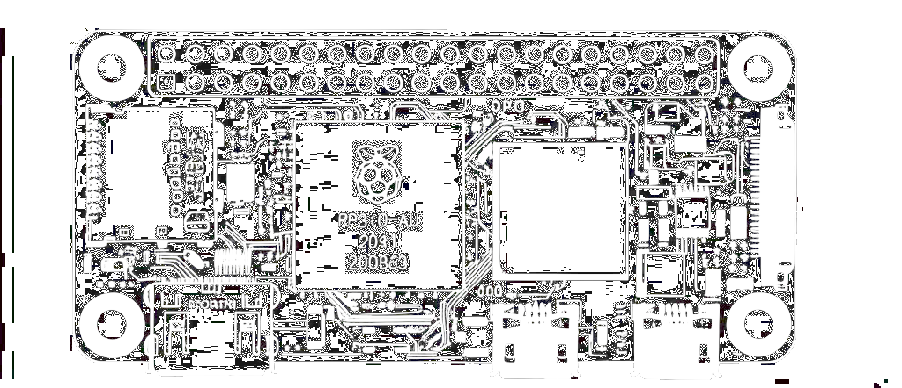

Pi web server

I thought it would be a good idea to share some of the artifacts and my thought process setting up my web server on my Raspberry Pi Zero 2 W. I hang out and grab coffee with my friend Evan every few weeks and he graciously and randomly gifted me this pi. I was very grateful and it it was perfect timing as I was planning to put together this portfolio.
Software Tools / Utilities / Services
NGINX list the concepts.
Networking Concepts
First i decided to register my domain names on Squarespace. Squarespace is a website building and hosting company, but will just be purchasing my domain from them. The only configurations I did on their site was assign the host, type, TTL and public IP address. I used a custom nameserver for DNS resolution. Use Domain Nameservers setting to assign a minimum of 2 nameservers at all times.
- HOST – sub-domain/host part of the record
- TYPE – “A” record mapping a domain to an IPv4 address
- TTL – how long (seconds) resolvers cache the record
- DATA – IPv4 address returned for the lookup
DNS Server Types
- Recursive resolver (ISP or
1.1.1.1) - Root name server
- TLD name server (
.iofor me) - Authoritative name server (Squarespace)
DNS Query Modes
- Recursive – “do everything for me”
- Iterative – resolver returns the next server to ask
- Non-recursive – answer already cached
Common DNS Record Types
- A, AAAA, CNAME, MX, TXT, NS, PTR, SRV, SOA
Web Server Choice
Next I looked at two different web servers I could use on my Pi. Apache and NGINX are two of the most popular and I went with NGINX because it provides a lightweight architecture which is optimized for high traffic which is perfect for the Zero.
Handy NGINX Commands
sudo systemctl start nginx– start servicesudo systemctl stop nginx– stop servicesudo systemctl restart nginx– restart after config edits
Router-Side Work
In order to allow external devices to access services on my local network, I need to enable port forwarding.
Port forwarding is a technique within Network Address Translation (NAT) that maps an incoming request from an
external IP address and port to a specific internal IP address and port on a local network. This allows external
devices to access services hosted on private network devices, such as web server.
The NGINX config file sets up a secure HTTPS server block that listens in on a port.
It serves content from where I host my website code.
The web server uses SSL certificates from Let's
Encrypt for my domain www.andrewhredzak.io, enabling encrypted traffic for the site.
I had originally tried port 80 as this is the standard port but it was unsecure, as was 8080.
After changing it to 443 it was secure and worked.
Common Web Ports
80 – standard, default port for HTTP
8080 – alternate HTTP
443 – standard, default port for HTTPS. used for encrypted web traffic
Cloudflare SSL services
I assigned my domain to Cloudflare; set encryption mode to Full. After,
I generated an Origin Certificate + Key in Cloudflare and saved them on the Pi here:
/etc/ssl/private/origin.key
/etc/ssl/certs/origin.crt
I installed and Ran Certbot for automatic renewals—will decide later whether to stick
with Let’s Encrypt or Cloudflare Origin certs (don’t serve both simultaneously).
Install certbot
sudo apt update
sudo apt install certbot python3-certbot-nginx -y
sudo certbot --nginx -d www.andrewhredzak.io
SSL (Secure Sockets Layer) and TLS (Transport Layer Security) are the protocols that encrypt and protect your
data when it's sent over the internet.
There are five phases in the SSL/TLS handshake process, and something
called the Diffie-Hellman protocol is used during the second and third phases. Client and server or Amy and Bob,
as they're often called in cryptography — exchange public keys. Each of them also has a private key,
and using both, they generate the same shared secret key. They don’t actually send the secret key; instead,
they each calculate it on their own. After that, they authenticate each other to make sure they're really
talking to the right person.
Version Automation Control
Repo lives in /var/www/html/portfolio/.
Added an SSH deploy key ~/.ssh/id_ed25519, then a shell script:
#!/bin/bash
cd /var/www/html/portfolio || exit 1
echo "Pulling latest changes from GitHub..."
git pull origin master
# restart if needed
systemctl reload nginx
echo "Portfolio updated."
Thanks for reading, feel free to reach out and say hello!
— Andrew
ACRONYMS
*for reference:
HTTP: hyper text transfer protocol
DNS: domain name system. translates domain names (like google.com) into IP addresses (like 142.250.64.**)
DNS Server: domain name system server
HTML: hyper text markup language
CSS: cascaded style sheets
TLD: top level domain
SLD: second level domain
www: world wide web
URL: uniform resource locator
URI: uniform resource identifier
ISP: internet service provider
TTL: time to live
arp -a : address resolution protocol
ARPANET: advanced research projects agency network
SSL: secure socket layer
TLS: transport layer security
NAT: network address translation
MAC: message authentication code (cryptographic technique)
MAC: media access control (address)
DSL: Digital subscriber line
NIC: network interface controller
FTP: file transfer protocol
DMZ: demilitarization zone
.pem: file for privacy enhanced mail for the priv key
cURL: client for URL
DDos: distributed denial of service